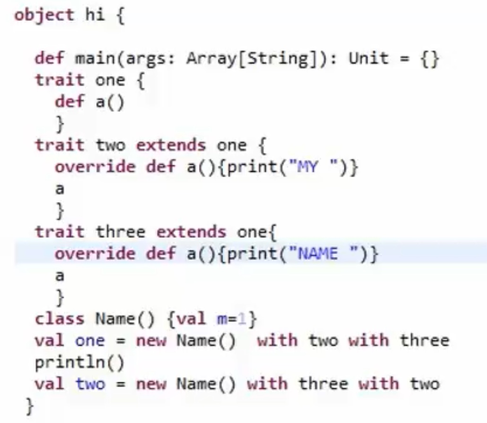

Scala 学习笔记
类-继承
- Extends 是 Scala 中实现继承的保留字
class week extends month{...}- week 类继承了 month 类所有非私有成员
- week 类是 month 类的子类，month 类是 week 类的超类
- 子类能重写超类的成员（具有相同名称和参数）
class week (val num: Int) extends month (var no.: Int) {...}object day extends week{. }- 单例对象同样能从类中继承，与类的继承语法相同
类-重写
Scala 中使用 override 保留字进行方法、字段重写
1
2
3class week extends month{
override def firstday= {}
}- override 保留字实际使用类似与 private，声明这个保留字后的定义、声明是对超类的重写，因此，其也可以写在类定义的参数中
- class week (override val lastday: String) extends month{…}
- 子类的重写或修改 Scala 会检查其超类，但是，超类的修改并不会检查其子类
- 重写包括字段和方法，但参数不同的方法可以不重写
- class month{ def secondday (m: String) ={…}}
- class week extends month{ def secondday = {…}}
规则：
- 重写 def
- 用 val：利用 va|能重写超类用没有参数的方法（getter）
- 用 def：子类的方法与超类成员重名
- 用 var：同时重写 getter、setter 方法，只重写 getter 方法报错
- 重写 val
- 用 val：子类的一个私有字段与超类的字段重名，getter 方法重写超类的 getter 方法
- 重写 var
- 用 var：且当超类的 var 是抽象的才能被重写，否则超类的 var 都会被继承
1 | Class month{ |
- 子类中，def 只能重写超类的 def, val 能重写超类的 val 或不带参数的 def, var 只能重写 超类中抽象的var或者超类的getter/setter对
类-抽象
- 不能被实例的类叫做抽象类
- 抽象类的某个或某几个成员没有被完整定义，这些没有被完整定义的成员称为抽象方法或抽象字段
- 用 abstract 保留字标记抽象类
1 | abstract year{ |
- 只要类中有任意一个抽象成员，必须使用 abstract 标记
- 重写抽象方法、抽象字段不需要使用 override 保留字
类-保护
- 当一个类不希望被继承、拓展时，可在类声明前加上 final 保留字
final class year {...}- 当一个类的某些成员不希望被重写时，可以在成员声明前加上 final 保留字
class year{ final def sign{ ... } }- 当超类中的某些成员需要被子类继承，又不想对子类以外成员可见时，在成员声明前加上 protected 保留字
- protected [this]，将访问权限定于当前对象，类似于 private [this]
- 类中 protected 的成员对其子类可见，对其超类不可见
class year{ protected def sign... } }
类-构造
- 子类构造器的运行在超类构造器运行之后
- 在超类的构造器中调用的成员被子类重写后，返回值可能不正确：
1 | class month{ |
1 | class week extends month{ |
- 构造 week 对象前先执行 month 的构造器，num 被初始化为 31, month 为初始化 days 数组，调用 num，但 num 被子类 week 重写了，但因为 week 构造器还没被调用，此时 num 的值未被初始化，因而返回 0, days 被设置为长度为 0 的数组，month 构造器运行完毕，执行 week 构造器，num 被初始化为 7
- 解决方法：
- 将超类的 val 声明为 final
- 将超类的 val 声明为 lazy
- 在子类中使用提前定义语法
- 提前定义：在超类的构造器运行之前初始化子类的字段
- 把需要提前定义的语句块放在 extends 与超类之间，并后接 with 保留字
cfass week extends {override val num =7} with month{...}- 提前定义中=右侧若需调用类中 B 成员时，除非 B 成员已在调用前提前定义
1 | class week extends{ |
特质
多重继承
- Scala 不支持多重继承，取而代之的是特质
- 一个子类只能拥有一一个超类，一个超类能拥有多个子类
- 即：class week extends month, year 是不合法的
- 为什么？
- 若一个子类继承自不同的超类，不同的超类中同名成员子类不知如何处理
- 多重继承产生菱形继承问题
- 解决多重继承可能导致的问题消耗的资源远比多重继承产生的价值高
- Scala 使用特质达到类似多重继承的效果
- 一个类可以扩展自一个或多个特质，一个特质可以被多个类扩展
特质能限制被什么样的类所扩展
- 特质是 Scala 里代码复用的基础单元，封装了方法和字段的定义
特质的定义使用保留字 trait，具体语法与类定义相似，除了不能拥有构造参数
1 | trait reset{ |
- 一旦特质被定义了，就可以混入到类中
class week extends reset {...}- 当要混入多个特质时，利用 with 保留字
class week extends reset with B with C{...}特质中的成员能是抽象的吗？ > 备注：所有 JAVA 接口都能当做是特质使用在 Scala 中
- 特质的成员可以是抽象的，而且，不需要使用 abstract 声明
- 同样的，重写特质的抽象方法无需给出 override
- 但是，多个特质重写同一个特质的抽象方法需给出 override
- 除了在类定义中混入特质以外，还可以
- 在特质定义中混入特质：
trait reseting extends reset{...}- 在对象构造时混入特质
val five = new month with reseting- 
- 特质的构造是有顺序的,从左到右被构造
- 构造器按如下顺序构造:
- 超类
- 父特质
- 第一个特质
- 第二个特质(父特质不重复构造)
- 类
* 如果class A extends B1 with B2 with B3…. * 那么，串接B1、B2、 3..等特质,去掉重复项且右侧胜出
- 特质的一个主要应用方面在于接口,根据类已有的方法自动为类添加方法
- 利用特质实现富接口:
- 构造一个具有少量抽象方法和大量基于抽象方法的具体方法的特质
- 那么,只要把特质混入类中,通过类重写抽象方法后,类便自动获得大量具体方法
1 | trait Logger{ |
- 特质的另一个应用方面在于:为类提供可堆叠的改变( super保留字)
- 当为类添加多个互相调用的特质时,从最后一个开始进行处理
- 在类中super.foo()这样的方法调用是静态绑定的,明确是调用它的父类的foo()方法
- 在特质中写下了super.foo() 时,它的调用是动态绑定的。调用的实现讲在每一次特质被混入到具体类的时候才被决定
- 因此，特质混入的次序的不同其执行效果也就不同
1 | abstract class IntQueue{ def get(): Int ; def put(x: Int) } |